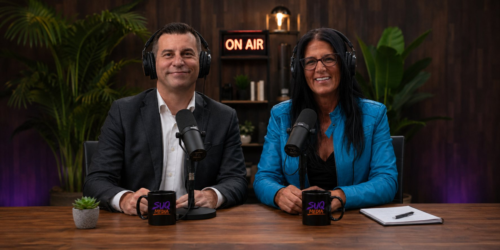

People Suq · Media · Community · Conversation
People Suq is a media and community platform built to talk openly about the things most people talk around. It amplifies real stories and brings attention to the people and organizations doing meaningful work — on addiction and recovery, mental health, homelessness and second chances. The podcast is the engine, but People Suq is bigger than any one show: it's where hard conversations happen out loud. People Suq is a proud partner of SUQ MEDIA.
What Is People Suq
People Suq is a media and community platform built to talk openly about the things most people talk around. It amplifies real stories, reduces stigma, and brings attention to the people and organizations doing meaningful work on addiction and recovery, mental health, homelessness and second chances. The podcast is its engine — but People Suq is bigger than any one show.
Honest, unfiltered conversations about the things that shape real lives — told without the stigma or the spin.
Profiles, interviews and firsthand accounts — told like a modern documentary, not a charity brochure.
Shining a light on the people and organizations doing the quiet, meaningful work across our communities.
Issues We Talk About
Each one is a growing hub of episodes, stories and resources — the conversations that matter, out loud.
Honest conversations about substance use, the road back, and what recovery actually looks like.
Real talk about anxiety, depression, trauma, and asking for help before it's a crisis.
The reality of housing insecurity and life on the edge — beyond the headlines and stereotypes.
Navigating treatment, medication, and the support systems people rely on to keep going.
Who goes without, why it happens, and the community efforts feeding neighbours with dignity.
Reentry, redemption, and the people proving that where you've been isn't where you end.
SUQ MEDIA × People Suq
People Suq comes from the same team behind SUQ MEDIA — hosted by founders Kerry and Krzysztof, and recorded in Calgary. Where SUQ MEDIA creates with brands, crews and artists, People Suq turns that same belief in creativity, culture, healing and hope into conversation: real stories, told out loud, about the issues shaping our communities.

Purpose
40%
of SUQ MEDIA profits support the Markin K Kossowski Foundation for Hope.
People Suq amplifies the same mission in conversation — mental health, addiction recovery, poverty and second chances — while SUQ MEDIA funds the work behind it. Two sides of one belief: that no one is beyond hope.
Learn About The Foundation ↗Join In
Follow People Suq for real stories, honest conversations and the people doing meaningful work in our communities. Head over to People Suq to explore the issues, the stories and what's coming.